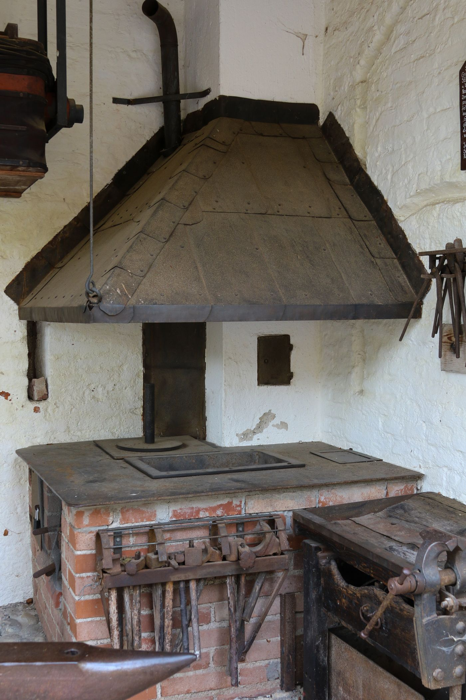

The smith, the steels, and looking after iron
Joe Hartley
I came to the forge the long way round. I started at nineteen shoeing horses, and a farrier's day is mostly forge work — every shoe is shaped hot, on the anvil, to fit a foot that will not stand still. The shoeing paid, but it was the making I kept thinking about, so at twenty-five I retrained properly: two years at the National School of Blacksmithing in Hereford, then six years with a heritage ironwork firm, working on cathedral screens, estate railings and churchyard gates across the north — including, though I did not know it then, two sets of gates I would meet again as a restorer.
Anvil Forge opened in Kelham Island in 2016, in the part of Sheffield that made cutlery and steel for the world. I work alone, by choice. The hand that measures your gate opening is the hand that draws it, forges it and hangs it, which means there is nobody else to blame and nothing lost between the drawing and the iron. It also means the book fills up: the forge takes on what one smith can make properly, and no more.
Most of the work is architectural — gates, railings, hinges and hardware for houses that were built when ironwork was made this way. The rest is split between blades and tools, forged in the quieter months, and restoration, which is the work I would do if nobody paid me: opening up other smiths' joints, some of them a hundred and thirty years old, and finding the work as good as the day it was riveted. The aim of this forge is simple to say and slow to do: work that the next smith, a century from now, will open up and approve of.

Steels and materials
There is no best steel — there is the right steel for the job, and most bad ironwork is good steel used in the wrong place. These are the metals on the forge's racks, and what each is for.
| Material | Used for | Notes |
|---|---|---|
| Mild steel | Gates, railings, frames, hardware | The default for architectural work. Forges and forge-welds cleanly, takes any finish, and will outlast the building if it is galvanised. Low carbon, so it cannot be hardened — it does not need to be. |
| Wrought iron | Restoration only | No longer made anywhere in the world. The forge keeps a stock salvaged from demolished ironwork, because a repair in wrought iron welds, works and weathers exactly like the original fabric around it. |
| 1095 | Knife edges, chisels, scrapers | High-carbon steel that hardens keen — about 60 HRC tempered at straw. The dark half of every damascus blade. Rusts if it is neglected, which is a fair price for the edge it takes. |
| 15N20 | Damascus partner steel | Its 2% nickel makes it resist the etch and stay bright, which is what draws the pattern against the 1095. On its own it is a bandsaw blade steel — tough and thin. |
| 1084 | Axes, adzes, heavy edge tools | A forgiving steel to heat-treat and a tough one in use. Tempered at brown or purple, it keeps an edge that survives knots, grit and the occasional hidden nail. |
| EN8 | Hammers, drifts, punches, springs | Medium-carbon steel for the tools of the trade itself, and for gate springs and latches that need flex without brittleness — tempered blue, at 300°C. |
| Brass and copper | Collars, bolsters, inlay, finials | Soft metals, worked cold or at a low heat, used where a joint wants marking or a handle wants a bolster. They also stop the eye nicely against black iron. |
Looking after ironwork
Forged iron is not maintenance-free, but its maintenance is measured in minutes a year. Most of the ironwork this forge repairs failed from one skipped habit: a paint chip left to rust.
Outdoor ironwork
- Wash down once a year with water and a stiff brush; let it dry fully.
- Touch in any paint chip within the season — rust creeps sideways under sound paint.
- Oil hinges and latches twice a year; a gate should swing on one finger.
- Keep soil and leaf litter off the bottom rail — it holds water against the steel.
- Expect to repaint painted work every 7–10 years; galvanised work far less often.
Indoor work and fire tools
- Indoor ironwork is hot-wax finished; dust it, and keep it dry.
- Renew the wax every few years: warm the piece, rub in beeswax, buff when cool.
- Fire tools live happily by the hearth — brush ash off before it gets damp.
- Never use a wire wheel or abrasive pad on a wax finish; you will strip it in patches.
Knives and edge tools
- Wash and dry by hand after use. Carbon steel will stain — that patina is protection, not damage.
- Never the dishwasher, and never left wet in a sink.
- Little and often on a steel or stone beats a yearly rescue on a grinder.
- A drop of food-safe oil on the blade if the knife is stored for more than a few weeks.
- Every forge knife includes a yearly regrind — post it back, it returns sharp.
The repair promise. Anything this forge has made, it will repair. If a joint of mine ever fails, the repair is free for as long as I am at the anvil. Wear, damage and other smiths' work are charged at the day rate, quoted after a free assessment — and if a piece is honestly beyond repair, you will be told that instead, with the reasons.
Ask about a job
Photographs and rough measurements are enough to start.